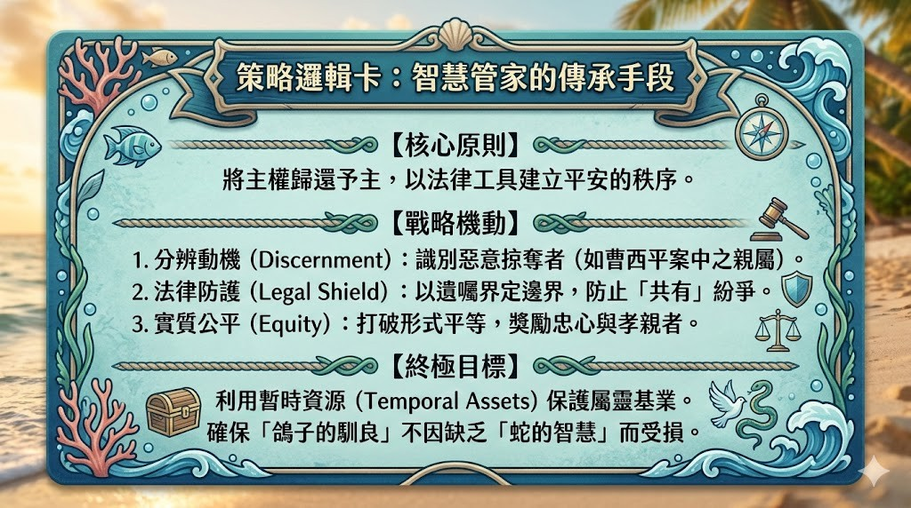

1. 時代背景與根基：法律與牧職的雙重呼召
在當代國度事奉中，將專業法律素養與屬靈生命呼召相整合，已成為落實神國管家職分的戰略關鍵。這種雙重身份的結合，將傳統法律上的「遺產繼承」從單純的資產移轉，提升為一種全方位的「基業傳承」。從戰略牧養的角度來看，法律不只是世俗的規範，更是守護教會平安、防止仇敵透過財務爭端分裂家庭的「屬靈盾牌」。本報告的權威性源自劉志忠律師（執事）的實務積累。劉律師擁有二十六年的法律實務經驗，目前擔任法律事務所副所長。在屬靈服事上，他深耕客家福音事工長達三十二年，並在台北靈糧堂客語牧區事奉約二十四年。在其生命歷程中，劉律師曾面臨強烈的內在張力：他曾立志全身心投入牧職，但神卻清楚指引他留在法律專業崗位上。這種「在專業中順服」的使命感，成為本分析的基石——他以律師的精準解析法律，以牧者的心腸守護靈魂。唯有真知道神對聖徒基業的豐盛應許，我們才能在屬世的資源管理中，展現屬天的智慧。
2. 戰略分析：「靈巧像蛇，馴良像鴿子」
在現代遺產規劃中，採取「蛇與鴿子」的哲學是確保屬靈影響力得以延續的必要戰略。管家必須具備敏銳的洞察力，辨別關係中的動機——區分惡意的爭奪與良善的繼承意願。正如聖經中「不義管家」的智慧，忠心的管家應懂得利用暫時的、屬世的資源（Mammon），透過精確的法律佈局，來建立永恆的國度關係並預備和平的未來。
策略邏輯架構圖

實踐「凱撒的物歸給凱撒」意味著管家必須熟稔世俗法律，透過合理的法律預防措施（如遺囑與信託）來最小化家族紛爭。這種做法並非缺乏信心，而是將法律秩序轉化為「和諧的傳承」，使信徒心中那雙「屬靈的眼睛」不被世俗資產的爭奪所蒙蔽，進而能轉向以弗所書所描述的屬靈「真知道」。
3. 屬靈基業：我們領受了什麼？
在進行任何實體規劃之前，管家必須先完成戰略性的「屬靈認知」。根據以弗所書 1:17-19，傳承的先決條件是求神賞賜智慧和啟示的靈，使我們「真知道祂」。
屬靈認知的戰略三層次
- 真知道主本身： 成熟的管家必須區分「追求福分」與「追求神本身」。遺產規劃的源頭應是對主本身的愛，而非對資產的執著。
- 真知道主已成就的工作： 領受十字架與復活的完整意義。十字架已斷開了歷代祖先流傳下來的偶像枷鎖與「客家癲」（客家福音先賢對使命的瘋狂熱愛）所面對的文化狹制，這是傳承中最核心的「屬靈斷開」與「自由領受」。
- 真知道個人的召命： 區分「一般大使命」與「個人特殊託付」。劉律師對客家福音三十二年的堅持，即是源於對本族本家的負擔。每位管家都應辨明神託付給其家族的特定「屬靈遺產」。
歷史典範的激勵
屬靈資產的傳承可參照「講道王子」司布真（Spurgeon）所留下的文字基業，或是本地教會創辦者李老師、永和牧師早年對學生的關懷榜樣。永恆牧師感恩於李老師當年在南昌街、徐州街時期的牧養裝備，這種「生命榜樣」的傳遞，其價值遠超金錢，是教會最穩固的根基。
4. 平安的實務：基業規劃的法律工具
法律規劃是「忠心管理」（馬太福音 25:21）的具體落實。管家應善用法律作為預防工具，避免在危急時刻（如吳中純主播因腫瘤驟逝事件）措手不及。
法律風險較高的四大迫切群體
- 單身者： 若無子女且父母不在，資產可能流向疏遠親屬，需透過遺囑指定受遺贈人或捐贈教會。
- 頂客族（DINKs）： 法律上配偶無法繼承全部遺產（需與兄弟姊妹平分，受「特留分」影響），若欲保障配偶，必須預立遺囑。
- 二度婚姻者： 涉及前後任配偶子女的權益分配，若無法律界定，極易產生法律對立。
- 企業經營者： 為了確保經營權穩定，必須避免股權被多人共有（均分），應透過規劃實現「單獨繼承」。
遺囑的四大戰略效益（四好）
- 單純特定： 明確指定特定房產或股權由誰繼承，避免形成「共有」狀態——「共有」往往是紛爭與法律僵局的開端。
- 簡單快速： 繼承人可憑合法的公證或認證遺囑直接辦理過戶，無需等待遠在海外的親屬簽署複雜文件。
- 實質公平： 民法雖有「應繼分」，但遺囑能達成「實質公平」。例如獎勵長期臥床照護的孝親子女，減少對不聞不問者的分配。
- 減少紛爭： 以立遺囑人的明確旨意作為最終權威，化解後代的猜忌與糾紛。
技術性說明：自書遺囑（Self-Written Will）法定要件
為確保法律效力，管家必須嚴格遵守民法第 1190 條之規定：
- 全文手寫： 嚴禁使用電腦打字，必須親筆書寫全文。
- 記明日期： 必須清楚寫下「年、月、日」。
- 親自簽名： 【重點】必須親筆簽名，嚴禁以印章（Seal/Stamp）代替。
5. 從「遺言」到「生命之路」：實踐與見證
生命見證是信仰傳承最真實的載體。透過遺產規劃的細節，能體現管家對下一代屬靈生命的戰略引導。
案例研究：法律與動機的運用
- 曹西平案： 典型的「蛇之智慧」。針對關係破裂、不聞不問的親屬，立遺囑人有權明確表達「一毛錢都不給姓曹的」，並將資產遺贈給長期照顧他的乾兒子。
- 屬靈獎勵機制： 有牧者在遺囑中設定實質誘因：若子女修讀神學院或投入全職事奉，額外給予 50 萬元 的裝備金；若通過「客語認證」，則給予 5 萬至 20 萬元 的獎金。這不是收買，而是運用屬世財富來鼓勵下一代承接屬靈使命。
遺囑撰寫範例指引
- 不動產： 需明列地號、建號，並指定「單獨繼承」。
- 金融資產： 標明特定銀行（如台灣銀行、郵局），並可針對母親或教會進行「遺贈」。
- 執行人： 建議指定「領受資產較多者」或專業律師擔任執行人，確保遺囑動機與落實。
論述綜合摘要表
| 階段,關鍵論述與綜合分析 |
|---|
| 啟程與呼召,強調專業律師（26年）與客家福音（32年）背景的結合，確立忠心管家的職分。 |
| 屬靈領受,以弗所書 1:17-19 的「真知道」，定義傳承必須先有領受。提及歷史人物（司布真、李老師、永和牧師）。 |
| 傳承動機,建立「亞伯拉罕、以撒、雅各的神」之三代傳承觀，追求「富傳三代」的屬靈與經濟發旺。 |
| 法律工具,詳述「四迫」（單身、頂客、二婚、企業）與「四好」（特定、快速、公平、減紛）的法律實務。 |
| 範例與細節,提供自書遺囑模板。強調手寫、日期、簽名。納入身後事（樹葬、從簡）的交代。 |
| 實踐與結語,提出實質誘因（50萬事奉獎勵、20萬語言認證），強調屬靈與屬世資產的雙軌傳承。 |
6. 結論與戰略差遣
一位「忠心的管家」必須學會運用「蛇的靈巧」（法律工具與遺囑）來捍衛「鴿子的馴良」（屬靈傳承與家族和諧）。基業傳承不只是財富的移轉，更是神愛在世間的具體延續。
邁向成功的關鍵要素
- 確權主權歸屬： 承認資產皆屬神賜，管家僅具備管理與分配權。
- 預建法律秩序： 趁身體強健時預立遺囑，簽名（不蓋章）以建立具效力的平安秩序。
- 落實實質公平： 善用遺囑打破形式平等，獎勵敬虔與孝親。
- 連結屬靈使命： 在遺產分配中植入對福音、語言、教會的奉獻與獎勵。
結語代禱
主啊，感謝祢賜下豐盛的榮耀作為我們的基業。求祢賜給IDO教會的弟兄姊妹智慧和啟示的靈，使我們真知道祢。求祢恩膏每位職場與家庭的管家，讓我們懂得運用法律的智慧，保護那屬靈的平安。求祢使我們的信心與資產都能代代發旺，在世傳承主愛，在天積攢財寶。願我們一生都能得著祢的悅納與稱許。奉耶穌基督聖名禱告，阿們。